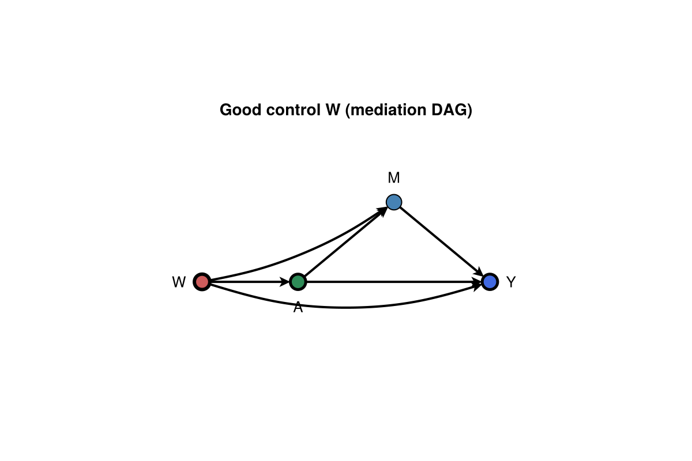
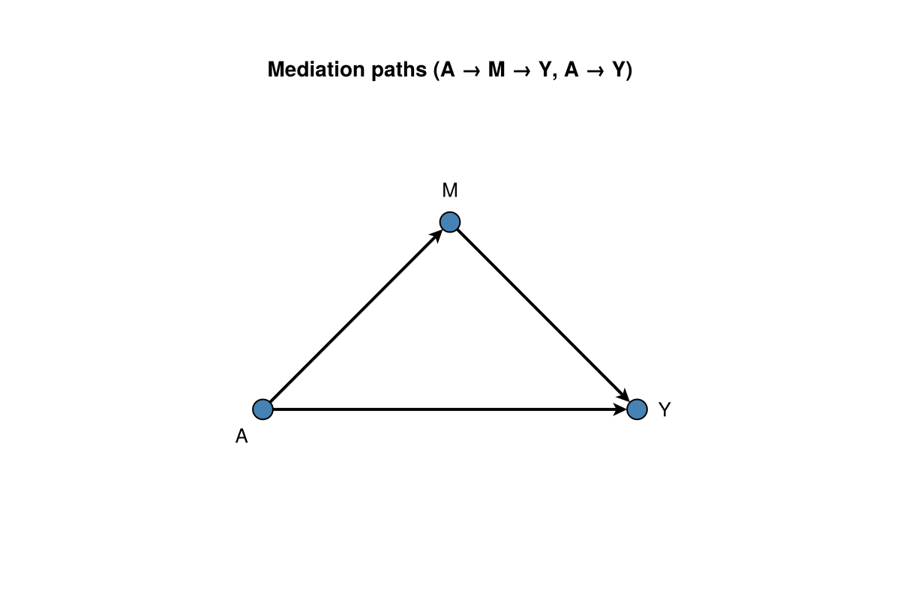
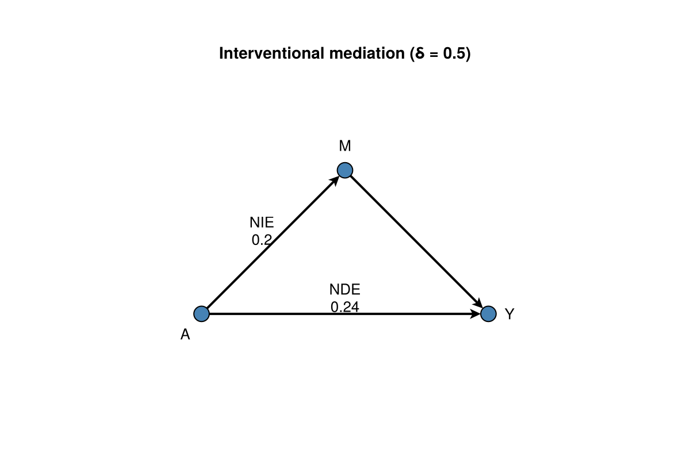
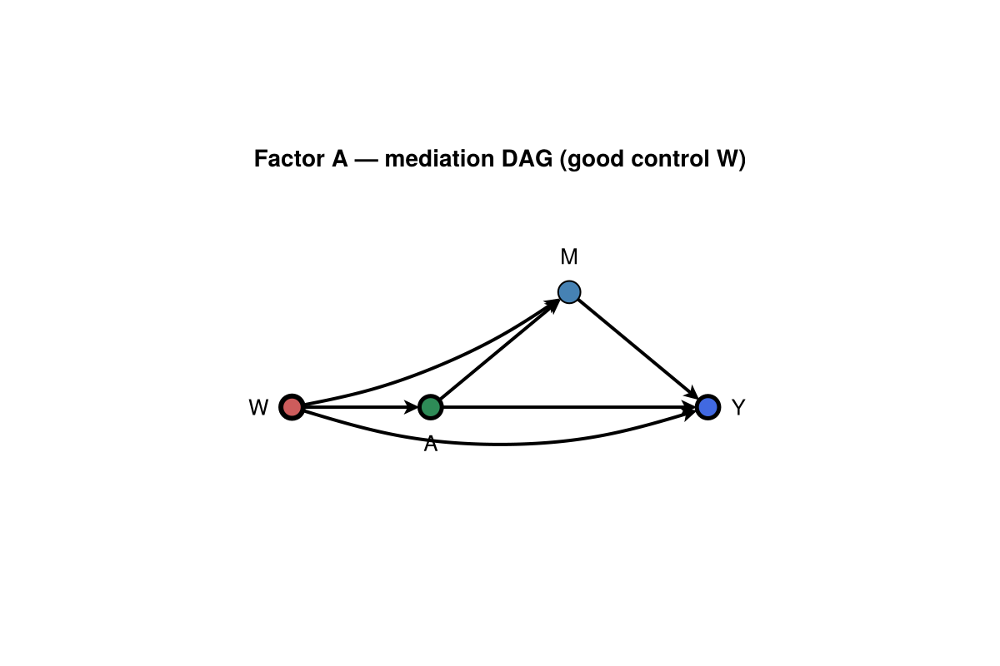
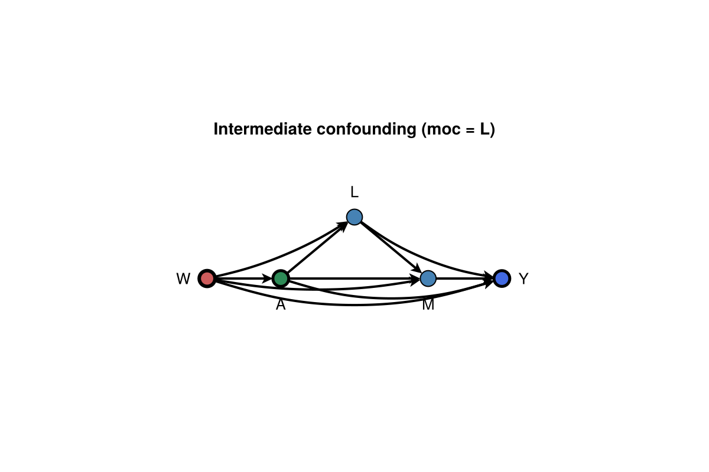
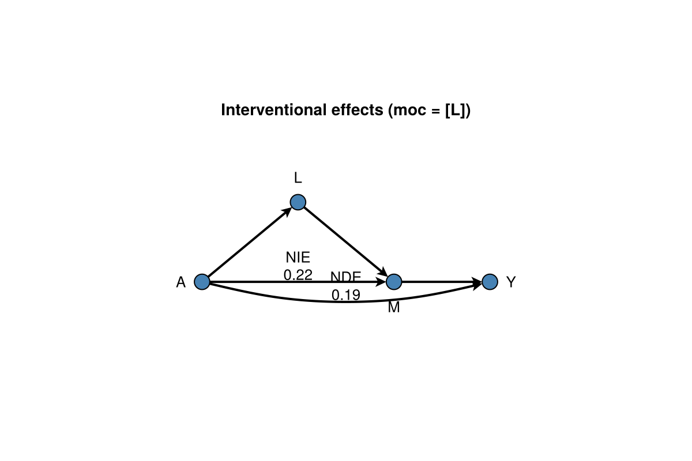
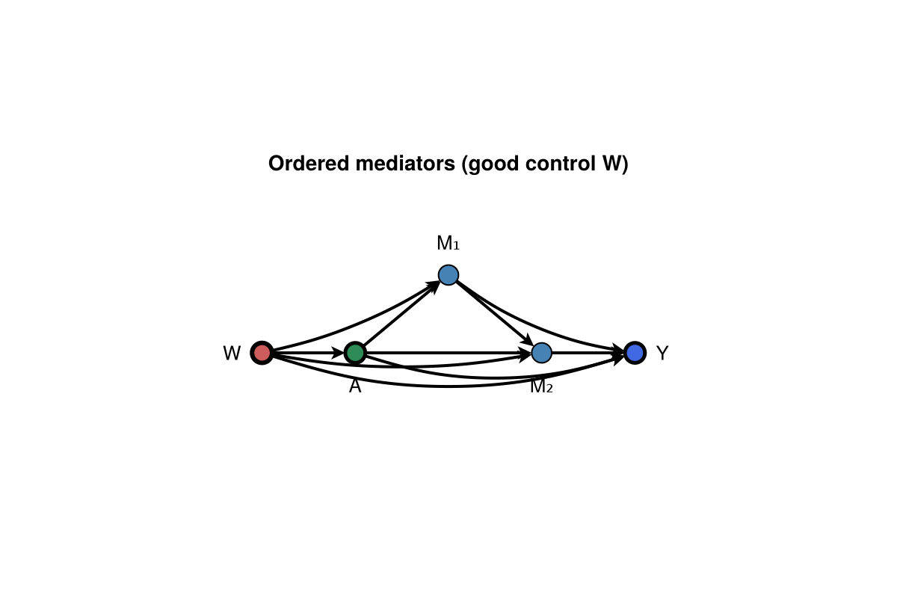
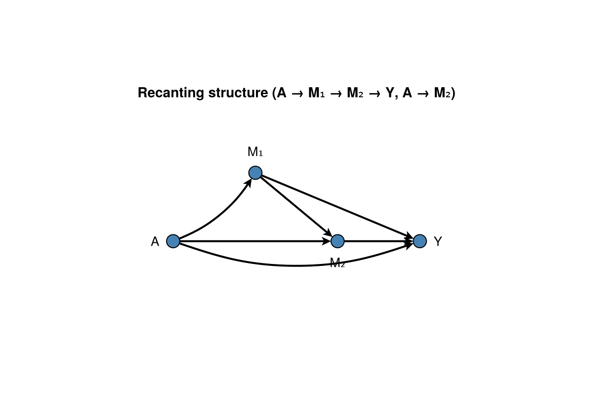

Getting started
CausalMediation estimates interventional TE / NDE / NIE (and related families) once CausalDynamics.jl has supplied a MediationQuery and adjustment set. CausalTargeted.jl provides Super Learner profiles and MTP nuisances.
DAG figures follow Cinelli, Forney & Pearl (2022, SMR) for good/bad controls, and Hong et al. (2024, HSORM) / Vansteelandt & Daniel (2017, Epidemiology) for multiple mediators and post-treatment confounding. Plotting uses DAGMakie directly (dagplot, dagplot_mediation, structural_edge_labels, edge_routing, CurvedEdge).
using Pkg
Pkg.add("CausalMediation")Load plotting backends when you want figures:
using CausalMediation, CausalTargeted, CausalDynamics, Graphs, DAGMakie, CairoMakieEach walk-through uses a full mediation DAG for identification (adjust baseline confounders only; never treat the mediator as a good control), then a slimmer estimand diagram for path labels. Use edge_routing / CurvedEdge when a fork or skip chord needs a bow (spine edges stay straight); skip chords on the baseline usually bow downward (side = :right), elevated forks upward.
1. Interventional mediation (NDE / NIE)
Graph. Baseline confounding with mediator M on A → Y.
using CausalMediation, CausalTargeted, CausalDynamics, Graphs, StableRNGs
g = DiGraph(4)
add_edge!(g, 1, 2); add_edge!(g, 1, 3); add_edge!(g, 1, 4)
add_edge!(g, 2, 3); add_edge!(g, 2, 4); add_edge!(g, 3, 4)
names = Dict(1 => :W, 2 => :A, 3 => :M, 4 => :Y)
id = identify(
g, MediationQuery(:A, :Y, [:M]; effect_kind = :interventional);
node_names = names,
)
spec = spec_from_identification(id)
spec.mediators, spec.covariates, spec.moc([:M], [:W], Symbol[])Graph (identification). Full mediation DAG; adjust W only (M is a mediator, not a good control).
using DAGMakie, CairoMakie
g_id = DiGraph(4)
add_edge!(g_id, 1, 2); add_edge!(g_id, 1, 3); add_edge!(g_id, 1, 4)
add_edge!(g_id, 2, 3); add_edge!(g_id, 2, 4); add_edge!(g_id, 3, 4)
layout_id = [
Point2f(0.0, 0.0), # W
Point2f(1.2, 0.0), # A
Point2f(2.4, 1.0), # M (elevated fork)
Point2f(3.6, 0.0), # Y
]
fig, _, _ = dagplot(g_id;
layout = layout_id,
labels = ["W", "A", "M", "Y"],
color_by = :adjustment,
exposure = 2,
outcome = 4,
adjustment = Set([1]),
edge_routing = Dict(
(1, 4) => CurvedEdge(bow = 0.18, side = :right),
(1, 3) => CurvedEdge(bow = 0.12),
),
title = "Good control W (mediation DAG)",
)
fig
Estimate. One-step interventional decomposition at δ = 0.5.
df, _truth = simulate_continuous_mtp_mediation(200; rng = StableRNG(7))
res = run_mediation(
spec, df;
deltas = [0.5],
folds = 2,
n_mc = 16,
estimator = :onestep,
learners = DEFAULT_SL_LEARNERS,
parallel = false,
rng = StableRNG(8),
)
d = CausalMediation.decompose(res)
d(te = 0.4310790518389026, nde = 0.23601066557502753, nie = 0.195068386263875)Graph (mediation paths). Direct and indirect routes with W omitted (already adjusted).
fig, _, _ = dagplot_mediation(["A", "M", "Y"];
title = "Mediation paths (A → M → Y, A → Y)",
)
fig
Graph (NDE / NIE). NDE on the direct path A → Y; NIE via the mediator arm A → M (δ = 0.5).
using Graphs: edges, src, dst
g_med, _ = mediation_graph(["A", "M", "Y"])
elookup = Dict(
(1, 3) => "NDE\n$(round(d.nde; digits = 2))",
(1, 2) => "NIE\n$(round(d.nie; digits = 2))",
)
fig, _, _ = dagplot_mediation(["A", "M", "Y"];
elabels = structural_edge_labels(g_med, [
get(elookup, (src(e), dst(e)), "") for e in edges(g_med)
]),
elabels_fontsize = 13,
elabels_distance = 14,
elabels_rotation = 0,
title = "Interventional mediation (δ = 0.5)",
)
fig
Without a graph, construct MediationSpec by hand (same estimation path):
spec = MediationSpec(:A, :Y; mediators = [:M], covariates = [:W])2. Factor treatment (recode MTP)
Interventional TE / NDE / NIE under a finite recode of categorical A (continuous M). Both arms must be DiscreteTreatmentPolicy.
using CausalMediation, CausalTargeted, StableRNGs
df, truth = simulate_categorical_a_mediation(280; rng = StableRNG(9))
identity = discrete_recode_policy(Dict{String, String}())
recode = discrete_recode_policy(truth.recode)
spec = MediationSpec(
:A, :Y;
mediators = [:M],
covariates = [:W],
policy_d0 = identity,
policy_d1 = recode,
)
res = run_mediation(
spec, df;
folds = 2, n_mc = 16, estimator = :onestep,
learners = DEFAULT_SL_LEARNERS,
rng = StableRNG(10),
)
CausalMediation.decompose(res)(te = 0.1026874768639434, nde = 0.19970043471676424, nie = -0.09701295785282085)Graph (identification). Same confounded mediation DAG as §1 (W good control; M on causal paths).
using Graphs, DAGMakie, CairoMakie
g_id = DiGraph(4)
add_edge!(g_id, 1, 2); add_edge!(g_id, 1, 3); add_edge!(g_id, 1, 4)
add_edge!(g_id, 2, 3); add_edge!(g_id, 2, 4); add_edge!(g_id, 3, 4)
layout_id = [
Point2f(0.0, 0.0), Point2f(1.2, 0.0), Point2f(2.4, 1.0), Point2f(3.6, 0.0),
]
fig, _, _ = dagplot(g_id;
layout = layout_id,
labels = ["W", "A", "M", "Y"],
color_by = :adjustment,
exposure = 2,
outcome = 4,
adjustment = Set([1]),
edge_routing = Dict(
(1, 4) => CurvedEdge(bow = 0.18, side = :right),
(1, 3) => CurvedEdge(bow = 0.12),
),
title = "Factor A — mediation DAG (good control W)",
)
fig
Natural / organic / recanting-twin / controlled-direct families and nonempty moc remain numeric-A only.
3. Intermediate confounding (moc)
When a post-treatment confounder L sits on the A → M → Y pathway, natural effects are not admissible. Pass moc = [:L] and keep an interventional (or recanting-twin / organic) effect kind.
using CausalMediation, CausalTargeted, StableRNGs
df, _ = simulate_intermediate_confounding_mediation(200; rng = StableRNG(3))
spec = MediationSpec(
:A, :Y;
mediators = [:M],
covariates = [:W],
moc = [:L],
effect = InterventionalMediation(),
)
res = run_mediation(
spec, df;
deltas = [0.5],
folds = 2,
n_mc = 12,
parallel = false,
rng = StableRNG(4),
)
d = CausalMediation.decompose(res)
assumptions(spec)(effect = InterventionalMediation, moc = [:L], natural_admissible = false, requires_moc = true, mediators = [:M], treatment = :A, outcome = :Y)Graph (structure). L is a mediator-outcome confounder (moc): it sits on A → L → M and opens bias if ignored.
using Graphs, DAGMakie, CairoMakie
g_moc = DiGraph(5)
add_edge!(g_moc, 1, 2); add_edge!(g_moc, 1, 3); add_edge!(g_moc, 1, 4); add_edge!(g_moc, 1, 5)
add_edge!(g_moc, 2, 3); add_edge!(g_moc, 2, 4); add_edge!(g_moc, 2, 5)
add_edge!(g_moc, 3, 4); add_edge!(g_moc, 3, 5); add_edge!(g_moc, 4, 5)
layout_moc = [
Point2f(0.0, 0.0), # W
Point2f(1.2, 0.0), # A
Point2f(2.4, 1.0), # L (moc)
Point2f(3.6, 0.0), # M
Point2f(4.8, 0.0), # Y
]
fig, _, _ = dagplot(g_moc;
layout = layout_moc,
labels = ["W", "A", "L", "M", "Y"],
color_by = :adjustment,
exposure = 2,
outcome = 5,
adjustment = Set([1]),
edge_routing = Dict(
(1, 5) => CurvedEdge(bow = 0.18, side = :right),
(2, 5) => CurvedEdge(bow = 0.18, side = :right),
(3, 5) => CurvedEdge(bow = 0.14, side = :right),
(1, 4) => CurvedEdge(bow = 0.10, side = :right),
(1, 3) => CurvedEdge(bow = 0.10),
),
title = "Intermediate confounding (moc = L)",
)
fig
Graph (interventional effects). Post-treatment confounder L on the A → M arm; estimation conditions on L via moc = [:L] (Coffman-style partial paths; see Hong et al. 2024, Fig. 4).
using Graphs: edges, src, dst
g_eff = DiGraph(4)
add_edge!(g_eff, 1, 2); add_edge!(g_eff, 1, 3); add_edge!(g_eff, 1, 4)
add_edge!(g_eff, 2, 3); add_edge!(g_eff, 3, 4)
layout_eff = [
Point2f(0.0, 0.0), # A
Point2f(1.2, 1.0), # L
Point2f(2.4, 0.0), # M
Point2f(3.6, 0.0), # Y
]
elookup = Dict(
(1, 4) => "NDE\n$(round(d.nde; digits = 2))",
(1, 3) => "NIE\n$(round(d.nie; digits = 2))",
)
fig, _, _ = dagplot(g_eff;
layout = layout_eff,
labels = ["A", "L", "M", "Y"],
edge_routing = Dict((1, 4) => CurvedEdge(bow = 0.14, side = :right)),
elabels = structural_edge_labels(g_eff, [
get(elookup, (src(e), dst(e)), "") for e in edges(g_eff)
]),
elabels_fontsize = 13,
elabels_distance = 14,
elabels_rotation = 0,
title = "Interventional effects (moc = [L])",
)
fig
assert_natural_admissible! throws if you request NaturalMediation with nonempty moc (the same gate as CausalDynamics identify).
4. Multiple ordered mediators
Applied work often has causally ordered mediators (M₁ → M₂) with direct arms from A to each (Hong et al. 2024, Fig. 3; Vansteelandt & Daniel 2017). Interventional TE / NDE / NIE treat the mediator vector jointly; path-specific contrasts need RecantingTwinMediation (§5).
using CausalMediation, CausalTargeted, StableRNGs
df, _ = simulate_recanting_twin_mediation(220; rng = StableRNG(13))
spec = MediationSpec(
:A, :Y;
mediators = [:M1, :M2],
covariates = [:W],
effect = InterventionalMediation(),
)
res = run_mediation(
spec, df;
deltas = [1.0],
folds = 2,
n_mc = 12,
parallel = false,
learners = DEFAULT_SL_LEARNERS,
rng = StableRNG(14),
)
CausalMediation.decompose(res)(te = 0.4667650864025118, nde = 0.16898712929779344, nie = 0.2977779571047184)Graph (identification). Baseline W; ordered chain A → M₁ → M₂ → Y plus direct A → M₂ and A → Y.
using Graphs, DAGMakie, CairoMakie
g_multi = DiGraph(5)
add_edge!(g_multi, 1, 2); add_edge!(g_multi, 1, 3); add_edge!(g_multi, 1, 4); add_edge!(g_multi, 1, 5)
add_edge!(g_multi, 2, 3); add_edge!(g_multi, 2, 4); add_edge!(g_multi, 2, 5)
add_edge!(g_multi, 3, 4); add_edge!(g_multi, 3, 5); add_edge!(g_multi, 4, 5)
layout_multi = [
Point2f(0.0, 0.0), # W
Point2f(1.2, 0.0), # A
Point2f(2.4, 1.0), # M1
Point2f(3.6, 0.0), # M2
Point2f(4.8, 0.0), # Y
]
fig, _, _ = dagplot(g_multi;
layout = layout_multi,
labels = ["W", "A", "M₁", "M₂", "Y"],
color_by = :adjustment,
exposure = 2,
outcome = 5,
adjustment = Set([1]),
edge_routing = Dict(
(1, 5) => CurvedEdge(bow = 0.18, side = :right),
(2, 5) => CurvedEdge(bow = 0.18, side = :right),
(3, 5) => CurvedEdge(bow = 0.14, side = :right),
(1, 4) => CurvedEdge(bow = 0.10, side = :right),
(1, 3) => CurvedEdge(bow = 0.10),
),
title = "Ordered mediators (good control W)",
)
fig
5. Recanting twins (path-specific)
When mediators share a recanting structure (A → M₁ → M₂, A → M₂), natural path-specific effects are not identified without twin substitutions (Vo & Díaz; see Methods — recanting twins). Use RecantingTwinMediation for path_direct / path_indirect summaries.
using CausalMediation, CausalTargeted, StableRNGs
df, _ = simulate_recanting_twin_mediation(200; rng = StableRNG(15))
spec = MediationSpec(
:A, :Y;
mediators = [:M1, :M2],
covariates = [:W],
effect = RecantingTwinMediation(),
)
res = run_mediation(
spec, df;
deltas = [1.0],
folds = 2,
n_mc = 12,
parallel = false,
learners = DEFAULT_SL_LEARNERS,
rng = StableRNG(16),
)
d = CausalMediation.decompose(res)
# Under RecantingTwinMediation, table rows NDE / NIE ≈ path_direct / path_indirect.
(d.te, d.nde, d.nie)(0.4148319942970054, 0.08839011219748738, 0.3264418820995181)Graph (path structure). Highlight the M₁ arm (via M₂) versus the direct A → M₂ shortcut.
using Graphs, DAGMakie, CairoMakie
g_rt = DiGraph(4)
add_edge!(g_rt, 1, 2); add_edge!(g_rt, 1, 3); add_edge!(g_rt, 1, 4)
add_edge!(g_rt, 2, 3); add_edge!(g_rt, 2, 4); add_edge!(g_rt, 3, 4)
layout_rt = [
Point2f(0.0, 0.0), # A
Point2f(1.2, 1.0), # M1
Point2f(2.4, 0.0), # M2
Point2f(3.6, 0.0), # Y
]
fig, _, _ = dagplot(g_rt;
layout = layout_rt,
labels = ["A", "M₁", "M₂", "Y"],
edge_routing = Dict(
(1, 2) => CurvedEdge(bow = 0.18),
(1, 4) => CurvedEdge(bow = 0.20, side = :right),
),
title = "Recanting structure (A → M₁ → M₂ → Y, A → M₂)",
)
fig
Estimators and nested Monte Carlo
estimator | Role |
|---|---|
:plugin | Nested-MC plug-in contrasts |
:onestep | Plugin plus EIF correction (default) |
:tmle | Targeting step on the same nuisances |
n_mc controls nested mediator draws. At small n, sweep it:
sweep = mediation_n_mc_sweep(
df, :A, :Y;
covar = [:W],
mediators = [:M],
n_mc_values = [8, 16, 32],
delta = 0.5,
folds = 2,
)
mediation_stability_markdown(sweep)Effect families
| Construct | Typical use |
|---|---|
InterventionalMediation() | Default RI / randomised intermediate under moc |
NaturalMediation() | Classical NDE/NIE when moc is empty |
OrganicMediation() | Lok organic effects |
RecantingTwinMediation() | Path-specific / RT contrasts |
ControlledDirect(m = …) | Fix mediators at specified levels |
Soft façades in CausalTargeted
Older CT names (run_crumble_*, engine :crumble) soft-deprecate to this package’s APIs. Prefer using CausalMediation and run_mediation in new code.